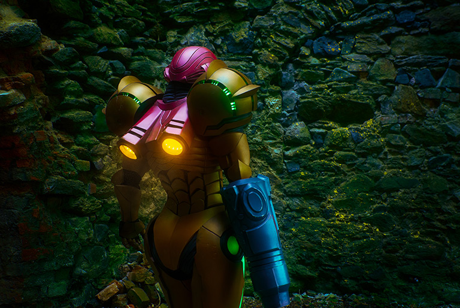
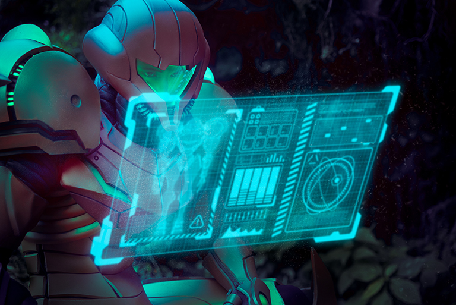
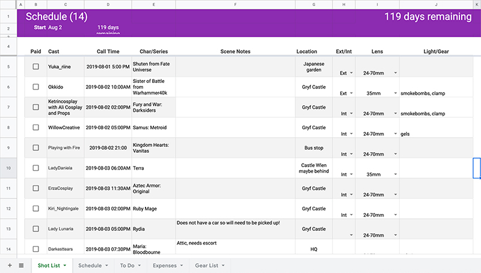
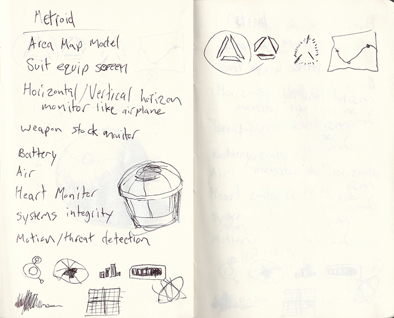
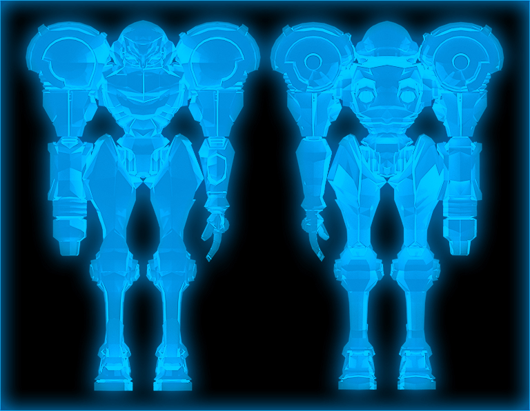
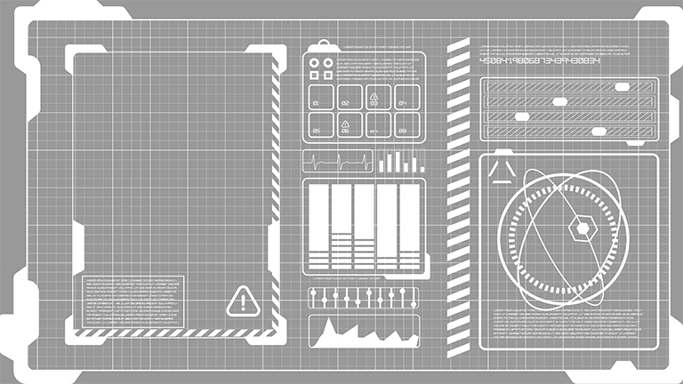
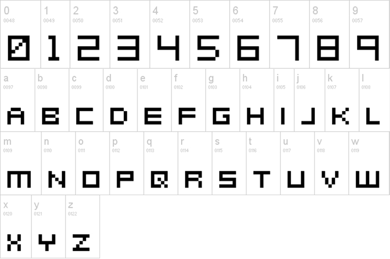

<!DOCTYPE html><html lang="en" id="top"><head><meta charset="UTF-8"/>
<meta name="viewport" content="width=device-width, initial-scale=1.0">
<meta http-equiv="X-UA-Compatible" content="IE=edge"/><title>Chris Norton: Designer</title><link rel="preconnect" href="https://fonts.googleapis.com">
<link rel="preconnect" href="https://fonts.gstatic.com" crossorigin><!--link(href='https://fonts.googleapis.com/css2?family=Open+Sans:wght@400;700&family=Source+Sans+3&display=swap', rel='stylesheet')--><link href="https://fonts.googleapis.com/css2?family=Arimo:ital,wght@0,400..700;1,400..700&amp;family=Source+Sans+3&amp;display=swap&amp;display=swap" rel="stylesheet"/><link rel="stylesheet" href="https://cdnjs.Cloudflare.com/ajax/libs/font-awesome/4.7.0/css/font-awesome.min.css"/><link rel="stylesheet" href="styles/styles-2025.css"/><script src="js/polyfill.min.js"></script></head></html><body><div class="wrapper bg-light-1"><div class="page"><header><h1>Christopher Norton</h1><nav><a href="index.html">Home</a><a href="index.html#projects">Projects</a><a href="#contactForm">Contact</a><a class="linkedin" href="https://www.linkedin.com/in/christopher-p-norton/" target="_blank"></a></nav></header><section class="bg-dark-3"><div class="content"><div class="page-nav top"><a class="back" href="index.html#projects"><svg width="24" height="24" viewBox="0 0 24 24" fill="none" xmlns="http://www.w3.org/2000/svg">
<path d="M20 18V20H13.5C9.91 20 7 17.09 7 13.5V7.83L3.91 10.92L2.5 9.5L8 4L13.5 9.5L12.09 10.91L9 7.83V13.5C9 16 11 18 13.5 18H20Z" fill="white"/>
</svg>Projects</a></div><h2 class="has-subtitle">PixelMania <a href='https://www.instagram.com/pixelmaniaevent/' target="_blank"><svg fill="#8A8A8A" width="32px" height="32px" viewBox="0 0 32 32" id="Camada_1" version="1.1" xml:space="preserve" xmlns="http://www.w3.org/2000/svg" xmlns:xlink="http://www.w3.org/1999/xlink"><g>
<path d="M22.3,8.4c-0.8,0-1.4,0.6-1.4,1.4c0,0.8,0.6,1.4,1.4,1.4c0.8,0,1.4-0.6,1.4-1.4C23.7,9,23.1,8.4,22.3,8.4z"/>
<path d="M16,10.2c-3.3,0-5.9,2.7-5.9,5.9s2.7,5.9,5.9,5.9s5.9-2.7,5.9-5.9S19.3,10.2,16,10.2z M16,19.9c-2.1,0-3.8-1.7-3.8-3.8   c0-2.1,1.7-3.8,3.8-3.8c2.1,0,3.8,1.7,3.8,3.8C19.8,18.2,18.1,19.9,16,19.9z"/>
<path d="M20.8,4h-9.5C7.2,4,4,7.2,4,11.2v9.5c0,4,3.2,7.2,7.2,7.2h9.5c4,0,7.2-3.2,7.2-7.2v-9.5C28,7.2,24.8,4,20.8,4z M25.7,20.8   c0,2.7-2.2,5-5,5h-9.5c-2.7,0-5-2.2-5-5v-9.5c0-2.7,2.2-5,5-5h9.5c2.7,0,5,2.2,5,5V20.8z"/>
</g>
</svg></a></h2><!--p International Event--><div class="tags"><div class="tag ui">UI</div><div class="tag vis">Visual</div></div><p><div class="metroid-intro"><div class="video-container"><video id="aquent-home" width="100%" poster="video/pixelmania2019/metroid-static.jpg" controls="true">
<source src="video/pixelmania2019/metroid.mp4" type="video/mp4">
</video></div></div></p><p></p><h3>Passion Project</h3><p>I wanted to put a little flavor in here with some personal work. No business or user goals other than just to bring creatives together from around the globe to make some really incredible collaborative works in Lubomierz, Poland. The event has gained the small hosting town international attention.</p><h6>Metroid Team ( 1 / 15 )</h6><ul><li>Creative Team Lead: Chris Norton</li><li>Talent / Costume Fabrication: Willow Creative (Netherlands)</li><li>Assistant: Katharine Repetski</li><li>Location Scout / Manager: Ambroży Kleks</li></ul><p></p></div></section><section class="bg-white"><div class="content"><h3>What I Did</h3><p>I led 15 different creative teams from 11 countries and as many languages over a 7 month period to produce 15 unique photo design projects for a single weekend event in Lubomierz, Poland. This page is only the first team project, but I rallied teams around ideas by creating moodboards and storyboards and coordinated with a variety of team members including talent, location scouts and specialists like wolfdog trainers and pyrotechnicians.  I handled all the logistics of travel and timing including equipment, vehicle rental, and accommodations.  I was also the photographer/designer/retoucher for each project.</p></div></section><section class="bg-white"><div class="content"><h3>Project Overview</h3><p>Pixelmania is an international collaboration laboratory for filmmakers, photographers, and costume designers to tell visual stories from comic books, movies, video games, and other pop culture. The event runs annually in Lubomierz, Poland.</p><div class="countries"><div class="flag"><div class="australia"></div><span>Australia</span></div><div class="flag"><div class="czech-republic"></div><span>Czech Republic</span></div><div class="flag"><div class="france"></div><span>France</span></div><div class="flag"><div class="germany"></div><span>Germany</span></div><div class="flag"><div class="hungary"></div><span>Hungary</span></div><div class="flag"><div class="italy"></div><span>Italy</span></div><div class="flag"><div class="lithuania"></div><span>Lithuania</span></div><div class="flag"><div class="netherlands"></div><span>Netherlands</span></div><div class="flag"><div class="poland"></div><span>Poland</span></div><div class="flag"><div class="slovakia"></div><span>Slovakia</span></div><div class="flag"><div class="sweden"></div><span>Sweden</span></div></div><p>Artists compete for acceptance with only around a hundred photographers allowed into the event each year. Almost every shoot I had was from a different country. Being able to work around a language barrier and work with different viewpoints was also a necessary skill.</p><p>During the event, attendees can book pre-scouted locations like ancient castles, abandoned factories, waterfalls, and Japanese gardens. Experts like animal handlers and pyrotechnicians are also available. I was able to work with the wolf dogs team and the pyrotechnics crew but you could also book horses to ride and other fun things too.</p></div></section><section class="bg-white"><div class="content"><h3>Pre-production</h3><p>As a photographer at this event, you are allowed to bring in an assistant to help carry gear, but you're the person responsible for making everything come together and delivering art. Producer, director, concept artist, camera operator, logistics- just everything. It's a lot of hats to make five shoots a day, three days in a row all come together in a foreign country.</p><p></p><p>People fly into Poland from as far as Australia so it’s very common to plan upwards of fifteen complicated photoshoots for the three-day event. Months of planning go into building costumes, designing concepts, and planning travel. It’s a very friendly collaborative space, but teams are there to get something made and at a high level. With everyone sinking their own money into the cost of production it’s hard to walk away from the experience without also gaining a lot of respect for the time and money that goes into even larger group projects. With five to six complex shoots happening every day.</p></div></section><section class="bg-dark-3"><div class="content"><h3 class="has-subtitle">IP Research / Moodboard</h3><p>To match the look and feel of the existing game I pulled</p><p></p></div></section><section class="bg-white"><div class="content"><h3>UI Design</h3><p>I wrote out the why for the design so I could focus on whether things were moving towards the intended purpose. My intent was to create a moment in time where the character was checking the status and configuring systems on their super-futuristic spacesuit and the faux user interface needed to support that. Things like checking weapon stock, battery usage, life support, damage assessment, threat detection, systems diagnostics, GPS, and general OS controls are all reasonable things a space adventurer needs to survive on a hostile planet by themselves.</p><p></p><p>Once I locked in the reasons for design solves I laid down rapid sketches for possible icons and interfaces. The aim was to make sure I had enough variety and also that groups of UI could almost be guessed by the user without me have to spend lots of time finishing every icon out before having to throw parts away.</p></div></section><section class="bg-dark-3"><div class="content"><h3>3D Shaders Using Maya/Arnold</h3><p>The costume builder on the Varia team was a master 3D modeler and 3D print expert. I thought the floating panel would be a great way to showcase her skills in multiple ways by including a render of her 3D print file.</p><p></p><h6>Learning</h6><p>Unfortunately, her model was too high-resolution to fit into the scene. The model matched the game design exactly, but became more of a focal point and broke the composition. In round two, I found a free low-poly version of the suit on Turbo Squid that was less distracting. After writing an X-ray shader, the low-poly version was a much better direction.</p><p></p></div></section><section class="bg-white"><div class="content"><h3>Illustrator conversion</h3><p></p><p>I started creating vector art for the final composite once I had simple sketches in place. Mapping out the systems using UX flows made it easier to prioritize UI components according to available tasks. Threat warnings needed to be always visible whereas as monster guidebook might get tucked away.</p></div></section><section class="bg-dark-3"><div class="content"><h3>Color</h3><p>Blue cues up the subconscious for science and learning. Green can feel toxic like a Disney villain or comforting like spring growth. Mixing a little green with blue introduces an other-worldly feel to the scene.</p><p><div class="color-chip"><small class="hex">#05eafb</small></div></p></div></section><section class="bg-white"><div class="content"><h3>Font - Metroid Prime Hunters</h3><p></p><p>There are several font sets used through the history of the game series but, “Metroid Prime Hunters,” retained more of a terminal feel when placed into the composition. It was a tough balancing act to find something that felt like it could live in a world within a world. The pixelated font helped the text stay in the panel even though you can’t  read most of it. It’s enough for it to just feel like you could read it if you needed to.</p><div class="page-nav bottom"><a class="back" href="index.html#projects"><svg width="24" height="24" viewBox="0 0 24 24" fill="none" xmlns="http://www.w3.org/2000/svg">
<path d="M20 18V20H13.5C9.91 20 7 17.09 7 13.5V7.83L3.91 10.92L2.5 9.5L8 4L13.5 9.5L12.09 10.91L9 7.83V13.5C9 16 11 18 13.5 18H20Z" fill="black"/>
</svg>Projects</a></div></div></section></div></div><footer class="bg-light-4"><div class="about-me"><h6>Christopher Norton</h6><p>Senior designer with experience in UX/UI launching 26 new products and countless features for web and mobile in the last 10 years. Able to lead, execute, analyze, and iterate on products from start to finish for cross-functional and regionally diverse teams. Strong problem-solving skills and a design thinker with a proven track record in enterprise-level B2B, B2C and SaaS products for clients such as: <strong>Boeing</strong>, <strong>Dell</strong>, <strong>John Deere</strong>, <strong>Booz Allen</strong>, <strong>Animal Planet</strong>, <strong>The Learning Channel</strong>, and others.</p><small><strong>Hidden Gem</strong>: I also developed this site from scratch using HTML5, CSS3, and JS using Node.js to run a local preview server which compiles and minifies Sass on the fly with Autoprefixer, CSS Lint and ES Lint. Version control is run through Github pages. I have wide a wide range of skills enabling me to bridge the communication gap between business stakeholders, designers and engineering teams.</small></div><div class="social-links"><h4 style="color: #345f7d">Site</h4><a href="index.html">Home</a><a href="index.html#projects">Projects</a><a href="https://www.linkedin.com/in/christopher-p-norton/" target="_blank">LinkedIn</a><a href="downloads/chris_norton_resume_ux_designer_2025-3.pdf" target="_blank">Resume</a></div><form method="post" name="contactForm" id="contactForm"><h6>Contact Me</h6><div class="form-group"><label for="fullName">Full Name</label><input name="fullName" id="fullName" type="text"/></div><div class="form-group"><label for="email">Email</label><input name="email" id="email" type="text"/></div><div class="form-group"><label for="message">Message</label><textarea name="message" id="message" rows="7"></textarea></div><div class="form-group"><button type="submit" id="submitContact">Send</button></div><div class="form-group"><small id="formStatus">Your message has been sent.</small></div></form></footer><script src="js/contact.js"></script></body>